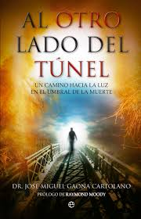

Descripción
- Título: Al otro lado del túnel
- Autor: Dr. Jose Miguel Gaona Cartolano
- Fecha: 11 de Septiembre de 2012
- Páginas: 432
Sinopsis:
Prólogo de Raymond Moody ¿Qué hay antes y después de la muerte? ¿Una intensa luz nos muestra siempre el camino? ¿Todos atravesamos un largo túnel para volver a la vida? ¿Qué vemos desde allí y qué sentimos? ¿Con quién nos encontramos? Desde una aproximación divulgativa pero de carácter científico, el psiquiatra José Miguel Gaona nos explica en las páginas de este interesante libro en qué consisten las experiencias cercanas a la muerte (ECM). Con numerosos testimonios de personas creyentes y no creyentes que han sufrido el llamado «efecto túnel», analiza cuáles son los elementos que forman parte de este viaje de ida y vuelta: los sonidos de la muerte, la luz, los viajes astrales, las visitas de familiares anteriormente fallecidos… Como afirma en el prólogo Raymond Moody –autor del exitoso Vida después de la vida-, «los investigadores de todo el mundo comienzan a descubrir
que las profundas experiencias espirituales de los moribundos resultan difíciles de explicar». Y en palabras del Dr. Gaona: «Lo que nos estamos jugando al intentar comprender en qué consisten las ECM no es solo si existe vida más allá de la presente, sino también si podemos entender los complejos modelos de conciencia, incluyendo la percepción sensorial o la memoria, ya que estos procesos podrían estar enfrentados a los conocimientos actuales de la neurofisiología». · La vida en una «película» y la vuelta atrás · Técnicas para acercarse a una ECM · Viajes astrales y salidas extracorpóreas · Sensación de presencias. ¿El ángel protector?